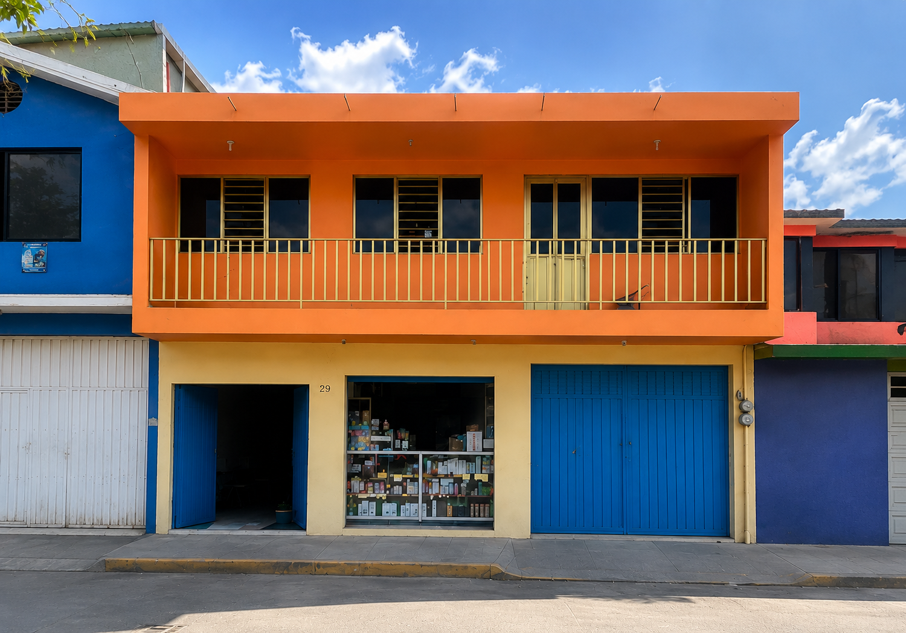
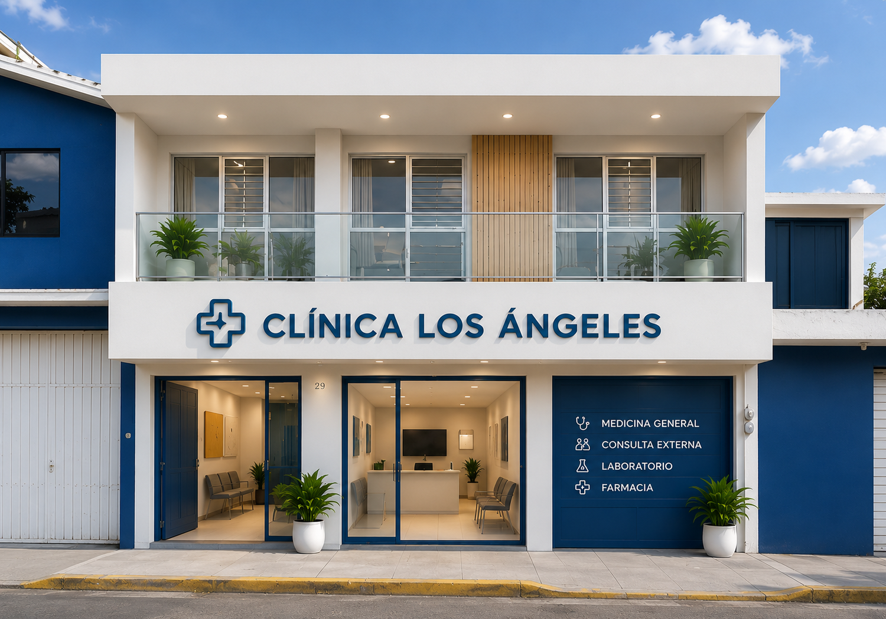

Foto próximamente
Ángel Hernández Bravo
Especialidad por confirmar
Cédula por confirmar
Medicina general, especialistas y atención cercana en un solo lugar. Cuidamos tu salud con trato humano, orientación clara y seguimiento profesional.
Directorio médico en proceso de confirmación. La versión final incluirá especialidad, fotografía y cédula profesional.
Especialidad por confirmar
Cédula por confirmarEspecialidad por confirmar
Cédula por confirmarEspecialidad por confirmar
Cédula por confirmarEspecialidad por confirmar
Cédula por confirmarAtención organizada para orientar al paciente desde el primer contacto.
Valoración médica, diagnóstico inicial, tratamiento y seguimiento.
Control de diabetes, hipertensión y otros padecimientos crónicos.
Evaluación y atención de problemas venosos y circulación periférica.
Orientación alimentaria y planes personalizados.
Atención infantil y evaluación de alergias.
Prevención, diagnóstico y seguimiento de salud femenina.
Atención en salud mental con respeto y confidencialidad.
Rehabilitación y recuperación funcional.
Sabemos que elegir dónde atender tu salud es una decisión importante. Por eso buscamos ofrecer un trato cercano, orientación comprensible y atención profesional para toda la familia.
Próximamente integraremos fotografías reales de fachada, recepción y consultorios.
Fachada actual del Consultorio Los Ángeles en Luvianos, Estado de México.

Visualización conceptual de una posible modernización de la imagen institucional del consultorio.
El número oficial de contacto será integrado cuando sea confirmado por el consultorio.
Ubicación:
Zona centro de Luvianos, Estado de México.
Horario:
Lunes a domingo · 8:00 a 20:00
Teléfono y WhatsApp:
Por confirmar
Solicita información, resuelve dudas o programa tu visita cuando el canal oficial esté disponible.
Contacto por confirmar WhatsApp próximamente